欠钱的人不谈借钱
情境：徐胜利说我不是找你借三十万，而是想跟你一块儿做生意去挣三十万。
遇到这种情况，可以这样做
- 越是缺钱，越别靠拆东墙补西墙续命。
- 把“借钱”换成“一起挣”，才是一条能走通的路。
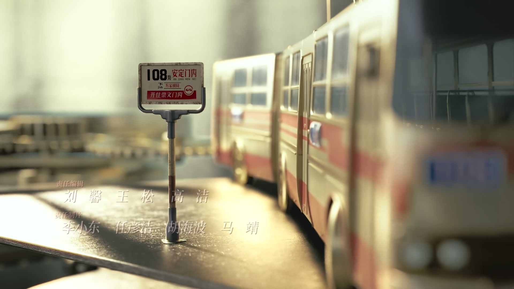
Drama Recap · 剧情图文总结
第 26 集 · 把厂子重新立起来
庄庄妈妈卖掉铺子筹钱治病，青歌赛决赛的广播在街头响起；曹广太咳血仍不肯进医院，沈冉冉替他挡在楚总面前；徐胜利拉着陶亮亮去俄罗斯倒皮子，三十万的生意在旅馆桌上铺开；温州那头，老叶把工人一个个找了回来。
妈妈卖了铺子给庄庄凑钱治病，决赛的广播在街头报出她的名字，她却在后台哭成一团。曹广太咳了血仍说“小毛病不用上医院”，沈冉冉替他拦下楚总。徐胜利算出一本利润超百分之三百的皮子账，拉着陶亮亮直奔俄罗斯；温州的老叶则凭一张脸面把散掉的工人都请了回来。
庄庄想把妈妈的铺子保住，妈妈却反过来宽慰她：叔叔还有朋友能借到钱，实在不行，咱家那个铺子还能卖几个钱。母女俩都知道，这铺子是庄庄回北京的路费，也是妈妈半辈子的营生。
剧里的鸡毛蒜皮，往往是人生的缩影。这些情节不只是故事——当你在现实中遇到同样的处境时，它们能提醒你：先做什么、别做什么、怎么说才有效。
情境：徐胜利说我不是找你借三十万，而是想跟你一块儿做生意去挣三十万。
情境：俄罗斯生牛皮是国内价格的三分之一，做成皮鞋皮衣倒卖回去利润超三百。
情境：曹广太替冉冉出头被打伤，冉冉却依旧不肯向楚总低头。
情境：庄庄妈妈愿卖掉半辈子营生的铺子给她治病，庄庄发誓一定买回来。
情境：出口的第一批货，徐胜利叮嘱保时保量，说每个产品都代表中国形象。
情境：徐胜利当面为当年逼庄庄参加比赛道歉，说自己无形中给了她更大压力。
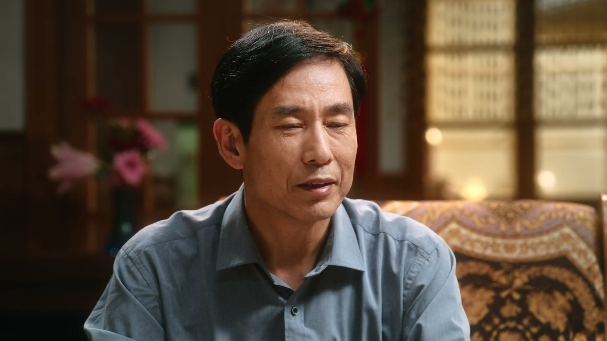
庄庄的积蓄见底了，妈妈的病等不起。母女俩坐在屋里，妈妈反过来劝她：叔叔还有朋友能借到钱，实在不行，咱家那个铺子还能卖几个钱。
庄庄说等妈妈过了这个坎，一定把铺子买回来。嘴上说着“一定”，眼眶却已经先红了。
关键台词 · KEY QUOTES
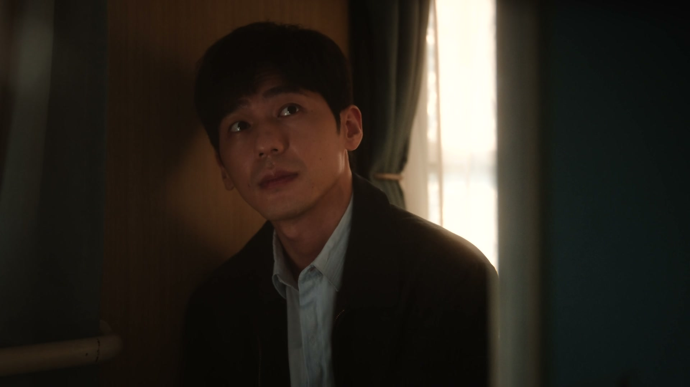
街头的大喇叭忽然播报：第十四届青年歌唱大赛决赛即将开始，将通过节目直播与观众共享。庄庄的名字混在主持人激昂的声线里，从北京传到温州，再从温州传回旅馆。
可舞台上的名字，如今却成了庄庄心里最疼的一个词。
关键台词 · KEY QUOTES
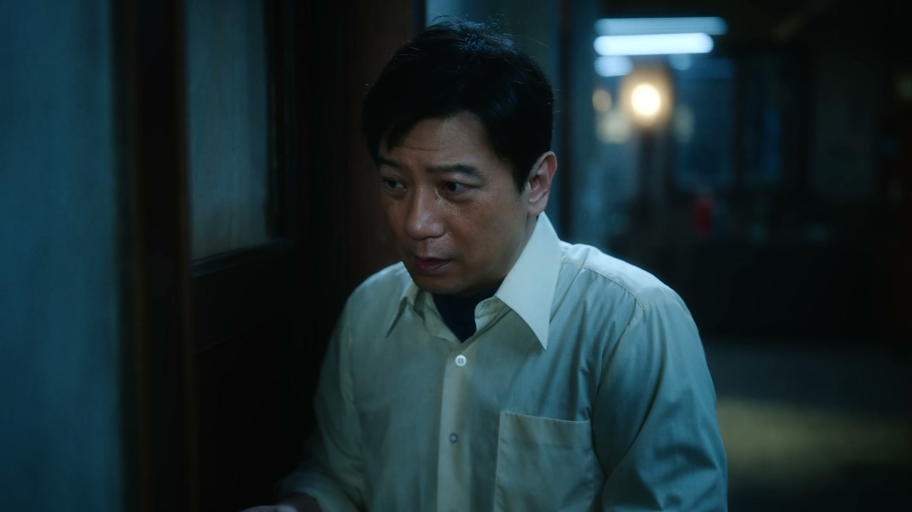
旅馆里，曹广太一阵猛咳，咳出了血。沈冉冉吓坏了，要拉他上医院，曹广太摆摆手：大风大浪都走过来了，这点小毛病不用上医院。
沈冉冉红着眼说，叔，我以后应该就不演戏了。曹广太张了张嘴，那句“为什么不演”终究没有问出口——他怕一开口，先掉眼泪的是自己。
关键台词 · KEY QUOTES
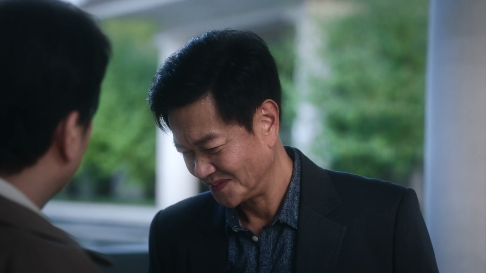
沈冉冉替曹广太挡住楚总派来的人，隔着门一字一句：请不要再打电话过来，不要再让人过来找我，就算你来了我也不会见你的。
电话那头楚总冷笑：我要想见到他，有的是办法。沈冉冉握着听筒的手微微发抖，却没有退让一步。
关键台词 · KEY QUOTES
徐胜利找到医生打听药，得知一种国产干扰素对癌症术后辅助治疗有效，价格便宜不少，但医院里也不多，得想办法去开。
他借了支笔，认真记下厂家名字。这个不起眼的厂名，成了他脑子里的一个念头。
关键台词 · KEY QUOTES
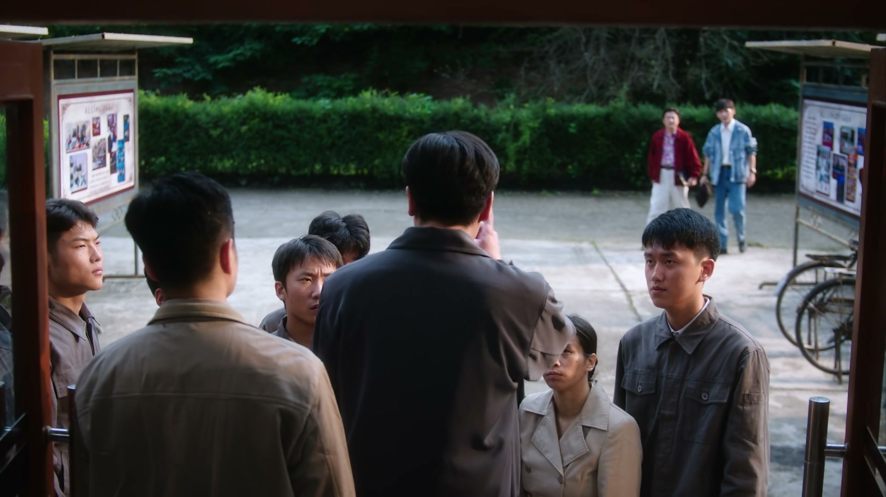
徐胜利找到陶亮亮，开门见山：我不是找你借三十万，我是想跟你一块儿做生意去挣三十万。欠着债再找朋友借，那不成了拆东墙补西墙。
他把账摊开：俄罗斯满大街都是生牛皮，价格是国内的三分之一，两美元一公斤。买回来做成皮鞋皮衣再倒卖回去，利润超百分之三百。陶亮亮一拍大腿，好运哥也笑道：找哥就找对了，找好运交好运。
关键台词 · KEY QUOTES
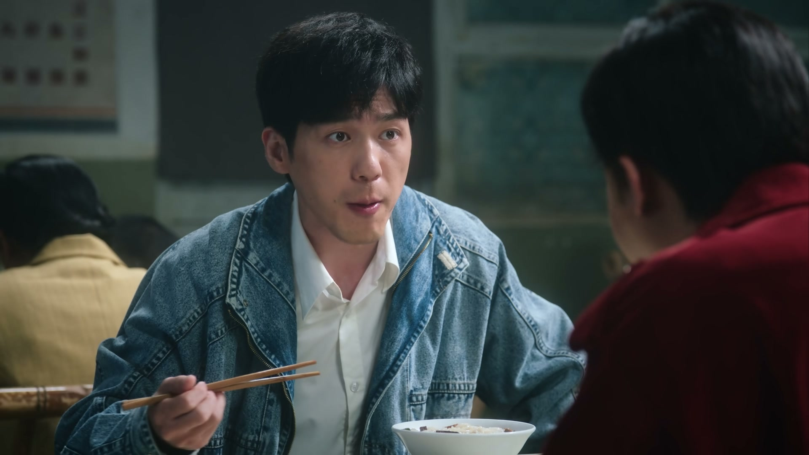
到了温州，叶叔叔张罗着接风，端上鱼丸、粉干和猪脏粉，说套一个地儿就得吃一个地儿的美食，这叫入乡随俗。
桌上谈起厂里的事：工人是得花钱，叶叔叔说回北京想办法。好运哥自嘲道：我叫好运哥他叫亮亮，你听这名，好运亮，凉透了；咱俩不一样，好运胜利，好胜利。一桌子人笑作一团。
关键台词 · KEY QUOTES
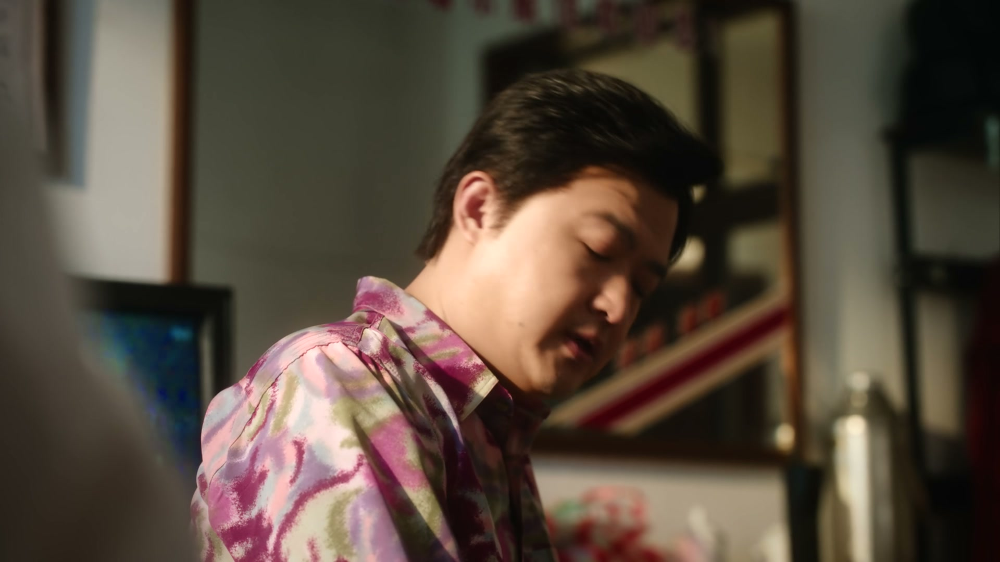
徐胜利把自己记下的干扰素信息摊开，陶亮亮这才明白：干扰素就是癌症术后辅助治疗的药。徐胜利叮嘱他别上火，厂里的皮子生意还等着人去跑。
有人问起徐胜利和庄庄还联不联系，徐胜利沉默片刻，说没联系了，你不想联系呗。嘴里云淡风轻，眉头却拧成了疙瘩。
关键台词 · KEY QUOTES
徐胜利赶到温州，庄庄已经等在老叶那里。她看着他，说了一句：从今以后，我跟他一块儿扛。徐胜利愣住，心里那根弦被轻轻拨了一下。
两人一起去看阿姨，庄庄握着妈妈的手叮嘱：您要努力吃努力睡，其他事您都不要想。徐胜利跟在身后，郑重地接过“一块儿扛”这三个字的分量。
关键台词 · KEY QUOTES
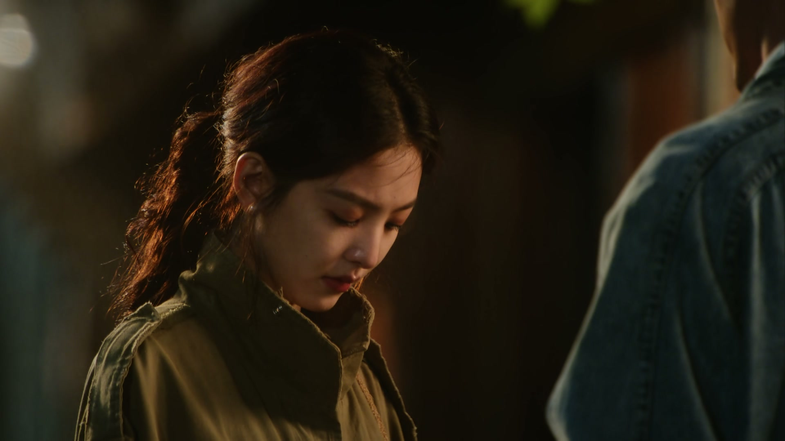
徐胜利找到老曹（曹广太）当面道歉：那会儿还逼着你去参加唱歌比赛，其实在无形之中给你的压力更大了，对不起啊。曹广太摆手，这事翻篇了。
徐胜利想再帮衬他一把，这次拿了现金来，曹广太死活不收。徐胜利笑着拆穿：我就知道你肯定不收，咱俩太了解彼此了，以后不管你遇到任何事，你一定要告诉我。
关键台词 · KEY QUOTES
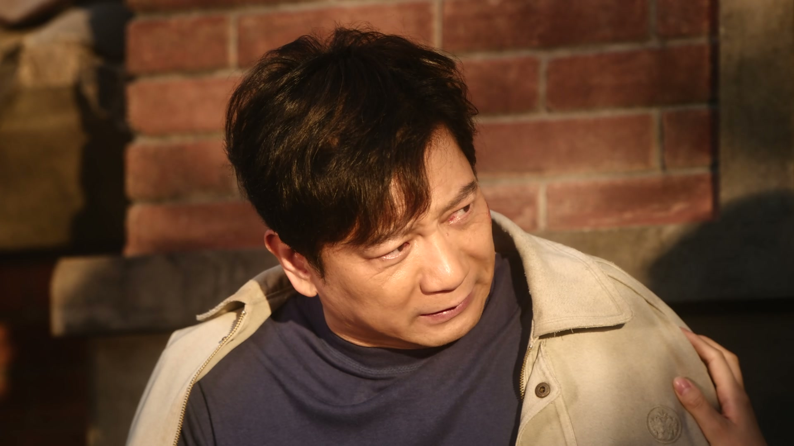
陶亮亮得知消息，急得声音都变了：你是不是去找楚财业了？沈冉冉说那我去报警，身边人赶紧拦下：别别别，这事人不能闹大了。
原来曹广太为替冉冉出头，独自去找楚总理论，回来时身上带着伤。沈冉冉看着他青紫的脸，眼泪终于绷不住。旅馆里气氛降到冰点，欠楚总的这一笔，已经压上了人。
关键台词 · KEY QUOTES
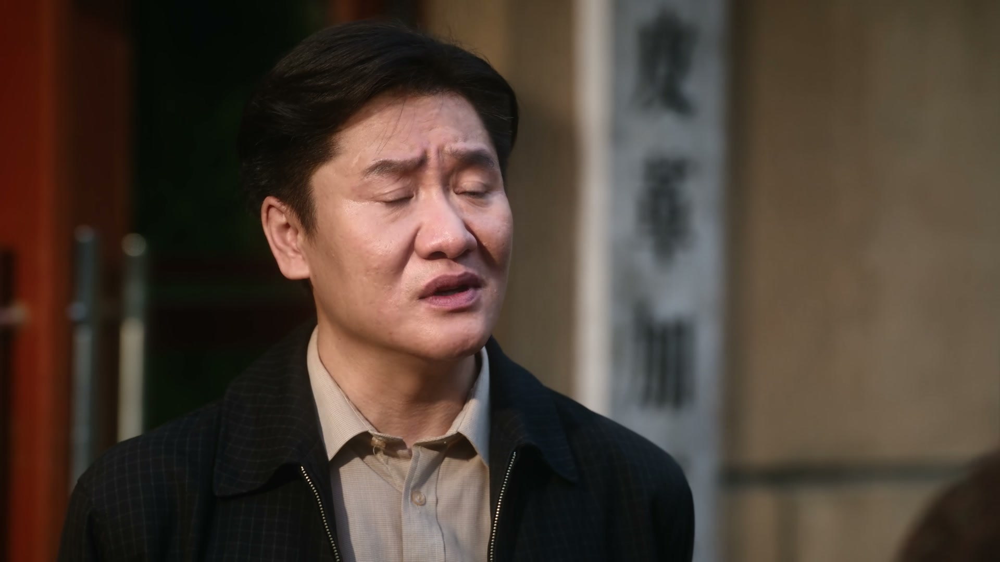
老叶打来电话：为了你们的事，我昨天又走动了一圈。原来王厂长散掉的工人，老叶一个个都给找回来了。有了他们，厂子又能接订单了。
徐胜利站在车间门口看着久违的机器，郑重叮嘱：虽然这次量不大，但一定要保时保量。咱是要出口的，每一个产品都代表中国在国际上的形象，产品的质量就是生命线。机器轰鸣声重新响起。
关键台词 · KEY QUOTES
记下干扰素厂名，算清皮子账拉陶亮亮入伙，赶赴温州重启工厂，叮嘱出口产品代表国家形象。
妈妈卖铺子替她凑钱治病，她赶到温州与徐胜利重逢，说出“从今以后我跟他一块儿扛”。
替曹广太挡住楚总的人，报警被拦下，看着为他受伤的曹广太哭红了眼。
被徐胜利的皮子账打动，加入俄罗斯倒货计划，也替曹广太受伤的事心急如焚。
咳血仍不肯住院，为替冉冉出头独自去找楚总，带着一身伤回来。
在温州张罗接风、牵线工人，把被王厂长散掉的老工人一个个请回厂里。
笑称“好运亮凉透了、好运胜利好胜利”，随徐胜利一同奔赴俄罗斯谈生意。
隔着电话冷笑“我要想见到他，有的是办法”，其势力让旅馆众人忌惮。
庄庄妈妈把半辈子营生的铺子押进药费里，庄庄哭着立誓要买回来。
大风大浪都走过来了——老演员把病痛咽回肚里，还要替冉冉挡在楚总面前。
两美元一公斤的生牛皮、超三百的利润，徐胜利用一本账把陶亮亮和好运哥拉上了去俄罗斯的火车。
好运亮凉透了，好运胜利好胜利——叶叔叔的一桌温州菜，吃出了重启的兆头。
车间重新轰鸣，出口的第一批货被徐胜利钉上“国家形象”的钢印。
徐胜利记下的那个厂家名字，将成为他通往温州工厂与生意合伙的关键线索。
超三百利润的账背后是资金缺口和境外交易的凶险，俄罗斯之行注定不会风平浪静。
拒医、咳血、带伤而归，曹广太的身体正一步步逼近临界点。
他这句冷笑不是放弃，而是换了一条更隐蔽的路，钱会借，手也不会松。